Architectural Projects
Casita City
Urban Housing Project
Terracurve Tower
High-rise Design
Bento
Design Intelligence Project
Between the Mounds
Landscape Architecture
LPC Headquarter
Corporate Architecture
Recycle Sphere
Sustainable Design
New York Archive
Gallery Design
Southside Community Arts Center
Community Architecture
Element Pavilion
Pavilion Design
Renovation Residential Development
Reuse and Renovation
Urban Scale
City Strategy
Mix-use
Hybrid Program Design
Project Details:
Casita City
Casita City showcases a type of communal living that centers around the residents of El Barrio, a predominantly Puerto Rican community in East Harlem New York. We are bringing the El Barrios’ food culture and vibriant living into the housing solution. This project presents a form of alternative ownership, collaborative households, and inviting fun and playfulness to the community. The form consists of a predominant Puerto Rican architecture style known as the “Casita”, in which the West-facing elevation depicts a Lil Casita and a Big Casita. With entryways to an open-air ground floor garden in the back of the project, a free standing round kitchen work-shop sits at the base of the building. The project will consist of varying materials, of ultra-high performance concrete, light cladding on the Lil Casita, corrugated polycarbonate for the winter garden (Big Casita) and CLT structural elements.
Software & Skills
- Rhino & V-Ray
- Adobe Suites
- Physical Modeling
- Sustainable Design & Community Research


Project Info
- Location: 1650 Madison Ave, New York, NY (East Harlem)
- Spring 2023 - Studio Course Prof. Marcos Parga
- Type: Residential
- Focus: Experimental Communal Modular Design & Sustainable Design
- Coroprate project with Meenu Pillai
Terracurve Tower
The mixed-use building contains commercial, office, hotel spaces and sustainable transitions between indoor and outdoor environments. A terracotta-to-glass facade, landscaped terraces connecting hotel floors, double-height lobbies, vibrant commercial spaces, and rooftop gardens shape the design.
Used Rhino and Grasshopper for massing studies, target view optimization, and facade design, transitioning effortlessly into Revit with Rhino.Inside.Revit. The project reinforces interdisciplinary workflows and demonstrates advanced BIM integration for precise, innovative execution.
Software & Skills
- Revit & Rhino.Inside
- Rhino & Grasshopper
- Enscape & AI Rendering
- Adobe Suites
- Facade Optimization
 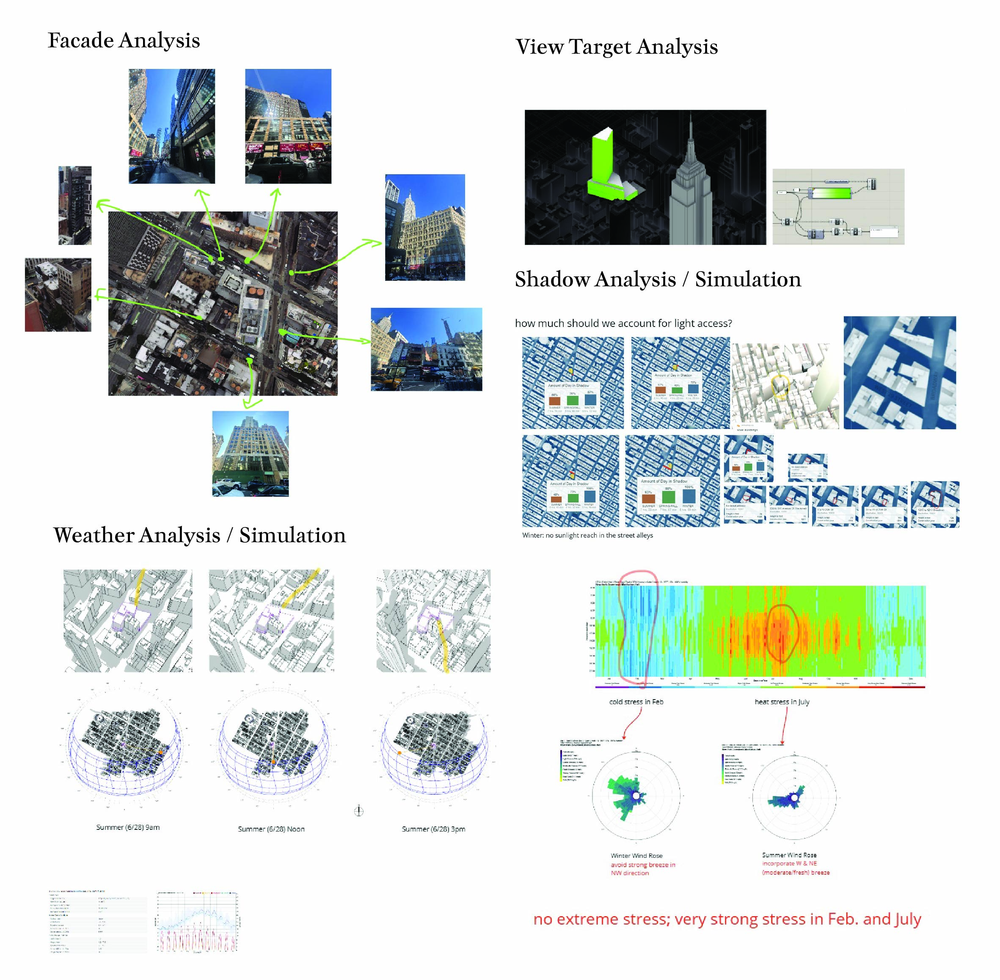
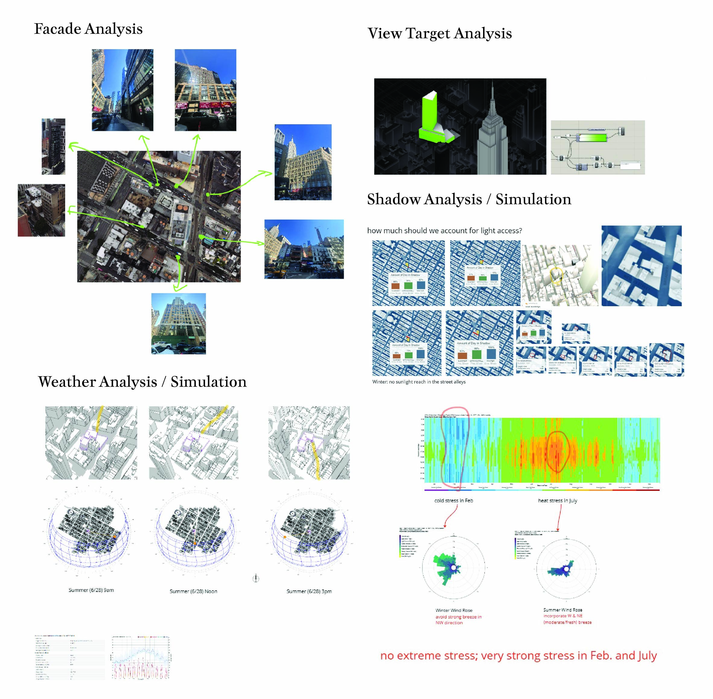
 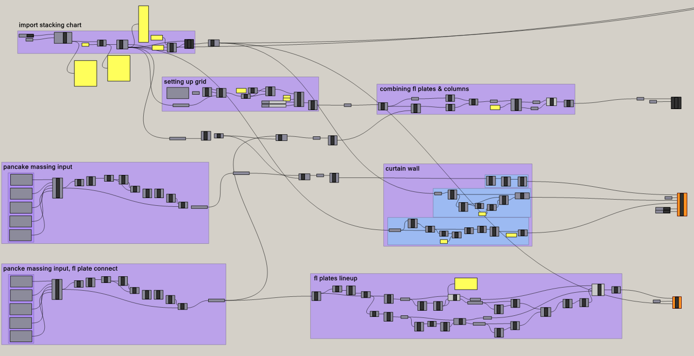
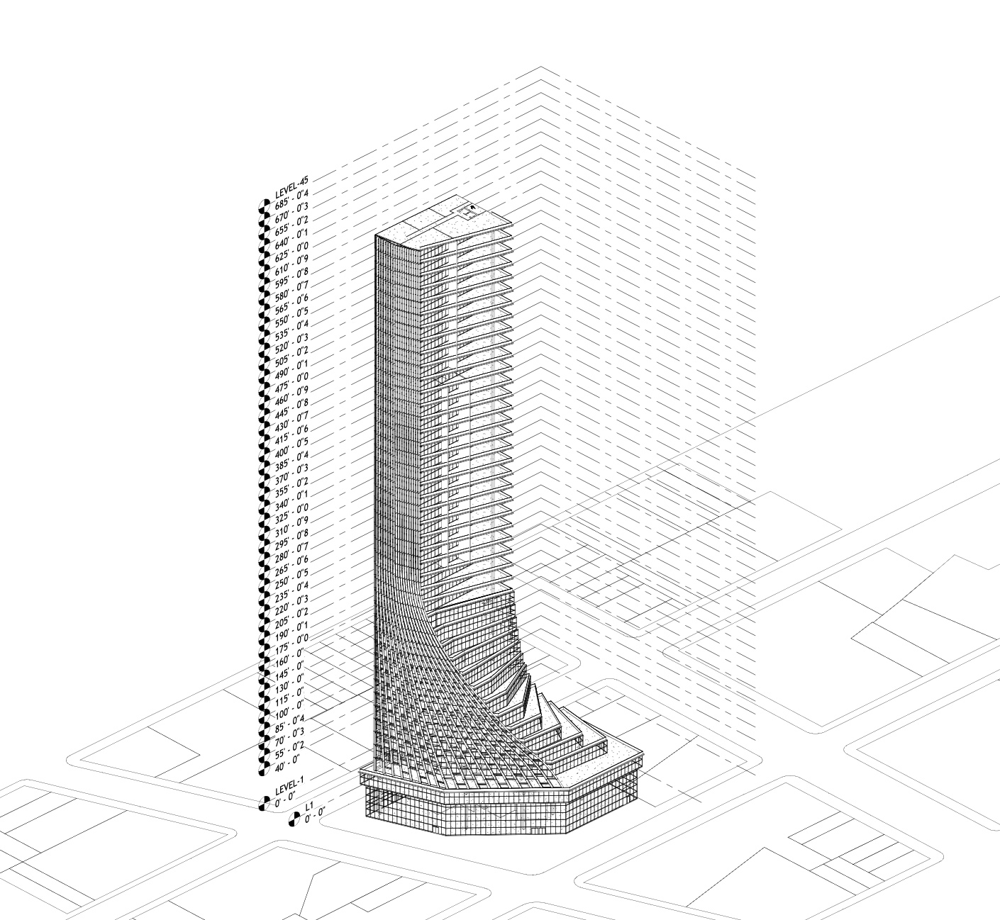
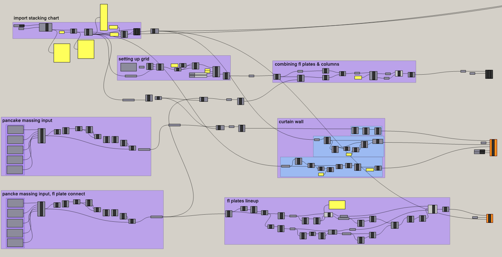
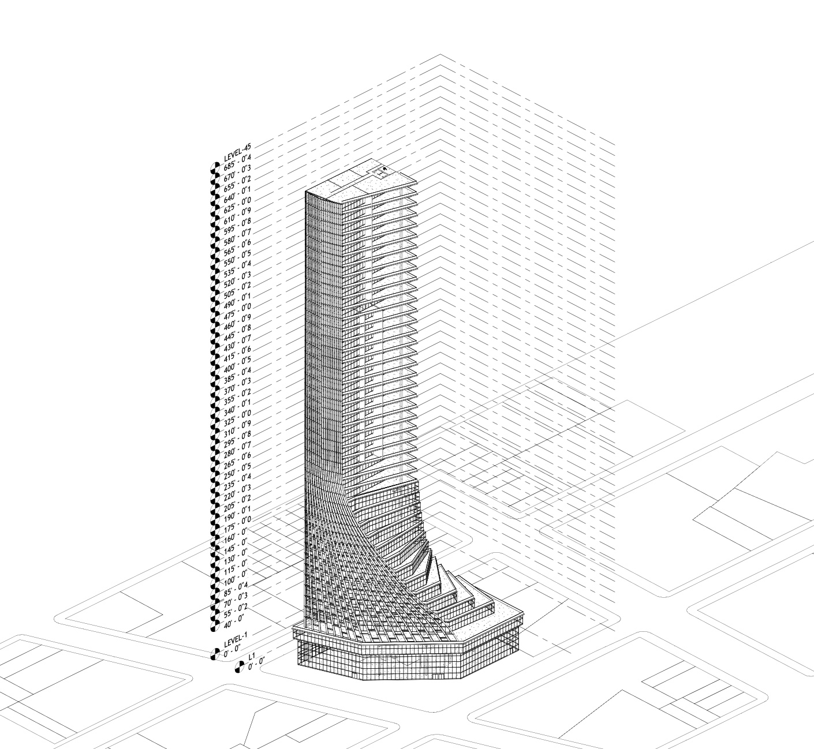

 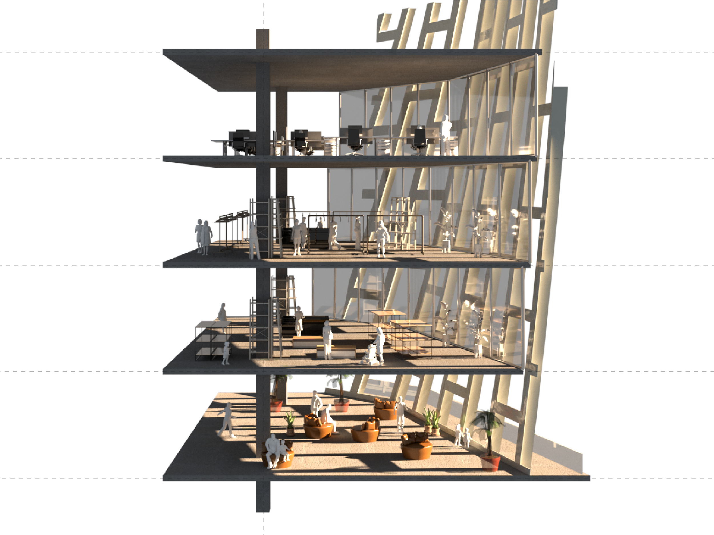
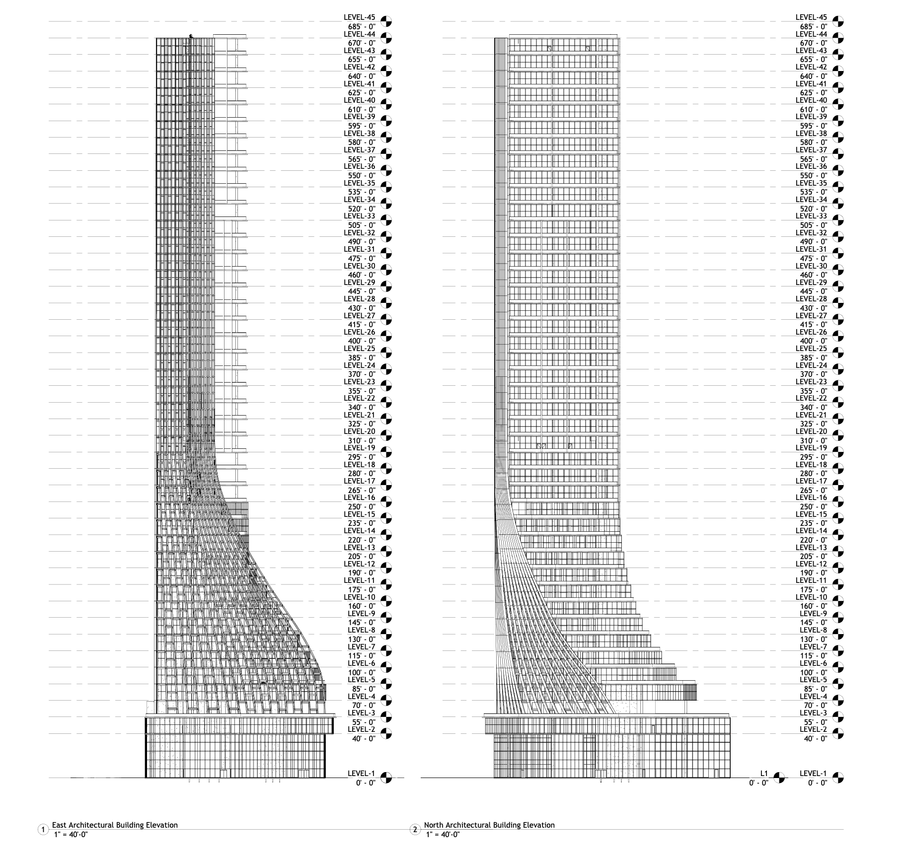
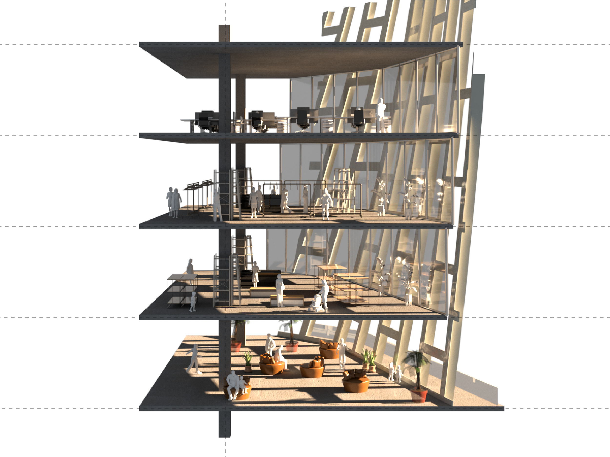
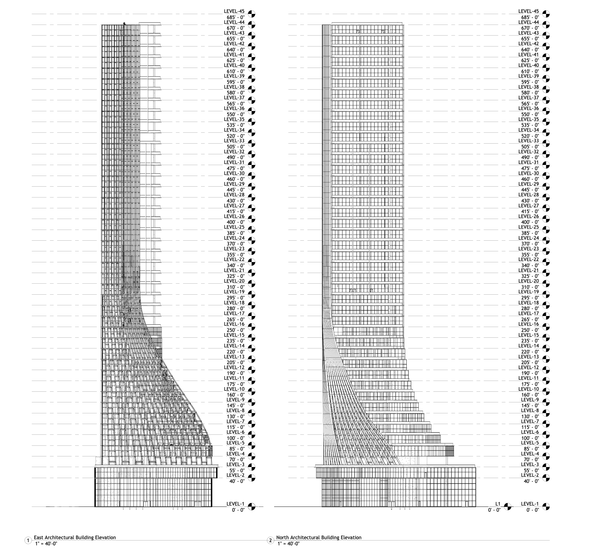


Project Info
- Location:1205 Broadway, New York, NY
- Fall 2024 Rethinking BIM: Exploring Interoperability in Design Prof. Joseph A. Brennan
- Type: Mixed-use
- Focus: Environmental Integration & Digital Workflow
- Corporate project with Manas Bhatia / Yilin Zheng
Bento
Bento is an experimental project that explores how urban data can inform the design of future retail environments. Using open datasets from New York City, raw information such as CSV and GeoJSON files were processed through Python scripts, cleaned, and transformed into matrix formats for mapping and visualization. This pipeline made visible the spatial and social patterns embedded in consumer behaviors, mobility flows, and neighborhood dynamics. By translating these insights into design strategies, Bento proposes an adaptive retail model that goes beyond static floor plans. The project demonstrates how data can be repurposed as design intelligence, supporting flexible layouts, personalized services, and new forms of community engagement. In doing so, it highlights the potential of computational design to connect architecture, open data, and emerging technologies in shaping responsive and user centered urban experiences.
Software & Skills
- Rhino & Grasshopper
- Python Scripting
- Data Visualization
- Adobe Suites
- Rhino Compute


 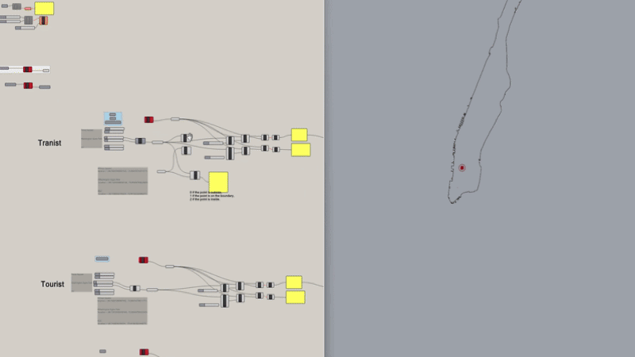
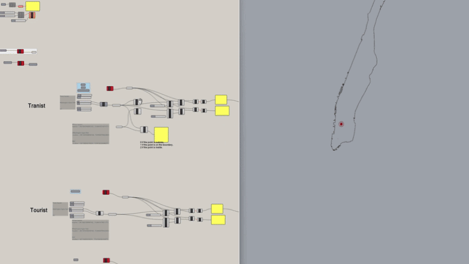


Project Info
- Fall 2024 Design Intelligent Prof. Danil Nagy
- Type: Design Intelligence Project
- Focus: Data-driven, Future Retail, Adaptive Systems
- Corporate project with Lin Genda, Jain Vaibhav, Ye Zhiqing, Zheng Yilin
Between the Mounds
BETWEEN THE MOUNDS is an experiential project to create a calm environment that is immersed in nature. The rough look of the concrete and the insertion of architecture with the soft mounds formulate a strong comparison. Different techniques of pouring create different scales of mounds. The mounds look random but are designed and poured with accuracy. The project contains mainly programs of water observation, bird watching, mound playground, and hotel cells. Moreover, To differentiate the ground type, using earth, vegetation, concrete, and colored concrete.
Software & Skills
- Rhino & V-Ray
- Adobe Suites
- Physical Modeling
- Landscape Strategy


Project Info
- Location:Grossoto, Marramma, Italy
- Spring 2022 Studio Course Prof. Cecilia Lunbank
- Type: Landscape Architecture
- Focus: Topographic Integration, Material Experimentation
- Corporate project with Jianlin Chen and Ruijia Ma
LPC Headquarter
LPC Headquarters reimagines 315 Broadway, a landmarked site in New York City, as a more welcoming and accessible home for the Landmarks Preservation Commission. The design preserves the historic lot as much as possible while inviting the community in through a new corner plaza. This open public space not only connects citizens to the Commission, but also transforms the LPC into a visible, approachable civic institution.
To create a better visitor experience, the project establishes visual connections between the hearing hall and the street, as well as between the hall, gallery, office, and archive. A large Jumbotron broadcasts ongoing hearings directly to the plaza, extending transparency and participation beyond the building walls. Inside, open offices occupy the 7th to 14th floors, interwoven with archive spaces to emphasize both accessibility and preservation.
As part of the design process, I conducted case studies of significant New York City landmarks to understand the complex relationship between heritage preservation, public engagement, and institutional presence. These precedents informed strategies for balancing protection of the historic site with the need to create an inclusive and forward-looking headquarters for the LPC.
Software & Skills
- Rhino & V-Ray
- Adobe Suites
- Historic Preservation Strategy
- Public Space Programming


Project Info
- Location: 315 & 317 Broadway, New York, NY
- Fall 2022 Studio Course, Prof. Rami Abou-Khalil
- Type: Mix-use
- Focus: Public Space Programming, Historic Preservation Strategy
- Corporate project with Linxi Zhang
Recycle Sphere
Recycle Sphere is envisioned as both a material recycling hub and a community center. Upon entering the lobby, visitors can immediately see every program within the project, as the overlapping of simple geometries creates a dynamic and inviting central space. The design encourages community members to walk in freely and explore in any direction.
Workshops open toward the CNY Regional Market, while the library faces the Walsh Regional Transportation Center—strategic placements that create strong visual and physical connections with the surrounding context. These spatial cues enhance interaction between the building, its users, and the neighborhood.
As part of the design process, I visited a local wood recycling center and conducted research on its circulation patterns and operational workflows. These observations informed the spatial strategies of Recycle Sphere, ensuring that the project not only serves as a symbolic community landmark but also functions effectively as a recycling facility.
Software & Skills
- Rhino & V-Ray
- Adobe Suites
- Systems Diagramming
- Community Outreach Research
- Sustainability Strategy


Project Info
- Location:CNY Regional Market, Syracuse, NY
- Fall 2021 Studio Course Prof. Terrance Goode
- Type: Community Center, Sustainable Design
- Focus: Circular Economy, Recycling Strategy
New York Archive
A gallery and archival space in New York that choreographs movement, display, and preservation. The design balances controlled environmental zones for storage with fluid public circulation for exhibitions and events.
The overall look of the project challenges the context of the city. Other buildings are rectangular and formalized in contrast to this curvy form. The main idea of the project is about the rational dynamic curvy form.
The facade for the project is a screen diamond system that can allow enough light for the upper ground part of the project. It also brings the whole mass feeling for the project. Furthermore, the facade plays more with the light with the diamond system.
Software & Skills
- Rhino & V-Ray
- Adobe Suites
- Archival Program Strategy


Project Info
- Location: New York, NY
- Fall 2020 Studio Course Prof. Anne Munly
- Type: Gallery/Archive Design
- Focus: Circulation & Curation
Southside Community Arts Center
The Southside Community Arts Center is a community-focused arts center that serves as a cultural hub for the neighborhood. The design prioritizes accessibility and community engagement through flexible programming spaces. This project intend to create a community space which fits into the neighborhood. The form of different parts of the art community center is similar to the house in the neighborhood. Taken the pitched roof form and picked up the rhymes of the roofs around it.
Software & Skills
- Rhino & V-Ray
- Adobe Suites
- Community Engagement Planning
Project Info
- Location: Brighton, Syracuse, NY
- Fall 2020 Studio Course, Prof. Sekou Cooke
- Type: Community Architecture
- Focus: Community Engagement, Flexible Spaces
Element Pavilion
Element Pavilion is a small-scale architectural intervention in Syracuse that explores light, structure, and materiality through modular design. Drawing from the case study of MOS’s Element House, the pavilion applies principles of simplicity and repetition to create an adaptable system that responds to its context.
The design carefully considers public pedestrian flow, shaping spaces that alternate between openness and enclosure. Light filters through the structure to create a dynamic interplay between positive and negative space. By emphasizing circulation, atmosphere, and community interaction, the pavilion becomes both a passage and a gathering place, offering an accessible dialogue between environment, structure, and experience.
Software & Skills
- Rhino & V-Ray
- Adobe Suites
- Prototyping, Physical Modeling
Project Info
- Location: Syracuse, NY
- Fall 2019 Studio Course, Prof. Anne Munly
- Type: Pavilion
Residential Development
A comprehensive residential development project focusing on adaptive reuse and renovation strategies. The project transforms existing structures while maintaining their historical character.
Software & Skills
- Revit, Rhino
- Adobe Suites
- Historic Preservation Analysis
- Client Coordination

Project Info
- Type: Residential Development
- Approach: Adaptive Reuse
- Focus: Renovation, Historical Preservation
- Credit to Lea Architecture
Urban Scale
The Urban Scale section presents projects that examine design at the metropolitan level through both master planning and digital workflows.
The first four images show a comprehensive master plan for Philadelphia, including the renovation of a central train station to enhance urban connectivity.
The last two images highlight research with ArcGIS CityEngine, where I contributed to developing a workflow for organizing and visualizing 3D city-scale data using the CGA programming language.
Together, these projects demonstrate an integrated approach to urban design, balancing large-scale planning with innovative computational methods.
Software & Skills
- Rhino & V-Ray, D5 Render
- ArcGIS CityEngine, CGA Shape Grammar
- Urban Analytics
- Transportation Planning


Project Info
- Type: Urban Scale
- Scale: Metropolitan
- Focus: Sustainable Development
- Integration: Multi-modal Transportation
- pic 1-4 credit to Lea Architecture, pic 5-6 credit to Yuance Information Technology
Mix-use
The mixed-use collection includes three projects, each exploring different scales and contexts of design.
The first is a gallery project sited along the river, where the green roof doubles as an extension of the landscape, blending architecture with nature.
The second is a small pavilion integrated within a hotel development, serving as both a gathering node and an architectural accent within the larger plan.
The third highlights a detailed eave design, incorporating traditional floral motifs and window patterns to connect contemporary form with cultural heritage.
Software & Skills
- Rhino & CAD
- Program Strategy
- Mixed-use Typologies

Project Info
- Type: Mixed-use
- Credit to ARTS Group